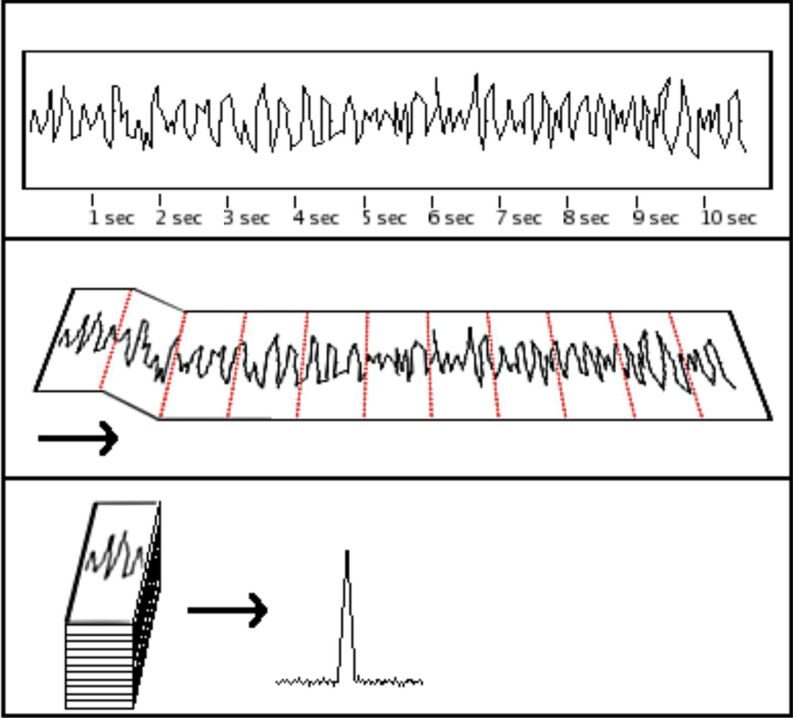
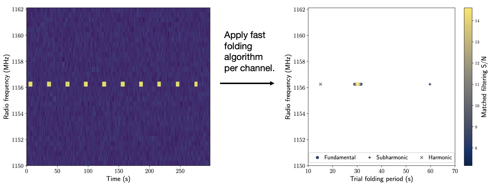

Detecting Repeating Radar-like Signals from Alien Worlds
Pulse Folding
Consider the challenge of finding a regularly spaced sequence of pulses buried in noisy data. Ideally, one would like each pulse to be bright and easily discernible above the noise floor. However, that scenario is rare when receiving signals from alien worlds several light years away. Even individual pulses from repeating natural astronomical sources, such as pulsars, are barely distinguishable from noisy fluctuations. How, then, can one detect trains of pulses? Can one exploit the intrinsic regularity of such pulse transmissions to their advantage?
One solution would be to break up a noisy time series into finite-length segments and then stack the segments so that individual pulses line up. By lining up and averaging \(N_{p}\) single pulses, one builds an average profile with signal-to-ratio elevated by a factor of \(\sqrt{N_{p}}\). An alternate method for periodicity detection would be to use a Fast Fourier Transform. The fast folding algorithm (FFA) belongs to the former category of approaches. A key unknown with such techniques is the segment length or the signal periodicity, i.e., the spacing between the pulses.

Illustration of pulse folding. Given a trial folding period \(P\), a noisy time series (top panel) of length \(N\) is broken into \(\lfloor N/P \rfloor\) segments (middle panels). These segments are then stacked up. If the chosen trial period \(P\) approaches the true period of a repeating signal buried in the data, the stacking operation yields a significant pulse-averaged profile (bottom panel). Figure credit: Ryan S. Lynch, Pulsar Search Collaboratory.
Without prior knowledge of the true pulse spacing, one’s best bet is to try out numerous trial periods and hope that one of the trials lands close to the actual signal periodicity. Here, the FFA speeds up searches by intelligently selecting trial periods that minimize redundant operations accounting for the discrete sample resolution of an input time series. Once the true signal period has been found, the pulse-averaged signal profile can be constructed. The width of the pulse-averaged profile can then be estimated using a matched filter.
In summary, FFA coupled with matched filtering yields estimates of the following two quantities.
- Pulse spacing or periodicity
- Average width of the pulse-averaged signal profile
- Staelin, D. H., Fast Folding Algorithm for Detection of Periodic Pulse Trains, 1969 IEEE Proceedings 57 724.
- Morello, V., et al., Optimal Periodicity Searching: Revisiting the Fast Folding Algorithm for Large-scale Pulsar Surveys, 2020 MNRAS 497 4654.
blipss Workflow
Breakthrough Listen is a 10-year initiative (2015 – 2025) to conduct the most comprehensive searches of the Universe for signs of alien technology. Our software blipss, expanded as the “Breakthrough Listen Investigation for Periodic Spectral Signals”, utilizes the FFA routine from riptide to conduct searches for channel-wide repeating signals in radio dynamic spectra.
In astronomy, a spectrum characterizes the variation of light intensity with color. A dynamic spectrum, as the name suggests, captures the time variation of a spectrum. Therefore, dynamic spectra are 2D maps of radiation intensity, with one axis being frequency (or color) and the second axis being time.
Radio telescopes output discrete samples of their incident radiation intensity at a finite number of radio frequencies. Consequently, dynamic spectra in practice are 2D grids with shape (No. of frequency channels, No. of time samples).

Illustration of the blipss workflow. Consider a dynamic spectrum (left panel) containing in its central channel, a repeating signal with 30 s periodicity. Performing a per-channel FFA, blipss transforms the input dynamic spectrum into a frequency-trial folding period diagram. The repeating signal shows up as clusters of hits at multiples and submultiples of the signal period. The largest signal-to-noise is recorded at the true signal periodicity of 30 s. Image reference: Figure 1 of Suresh et al., 2023.
Surveying the Galactic Center
The line-of-sight towards the center of the Milky Way offers the highest stellar density of any direction in the sky. By extension from the Drake equation, the Galactic Center then harbors the greatest potential for hosting technologically advanced alien life in the galaxy. Surveying the central 50 light years of the Milky Way with the Green Bank Telescope, we conducted a pilot search for extraterrestrial radar-like transmissions using blipss.
As part of our survey, we observed known pulsars to verify the integrity of our data processing. Our data analyses successfully detected all observed pulsars. Searching for channel-wide repeating transmissions with periods between 11–100 seconds and duty cycles (ratio of the average profile width to the pulse period) between 10–50\(\%\), our data revealed no evidence of extraterrestrial signal to within \(7\sigma\) significance. In the process, we constrained the abundance of extraterrestrial transmitters with properties detectable by our analyses to fewer than one in about 600,000 stars at the Galactic Center.
We encourage interested readers to read our journal publication for technical details.